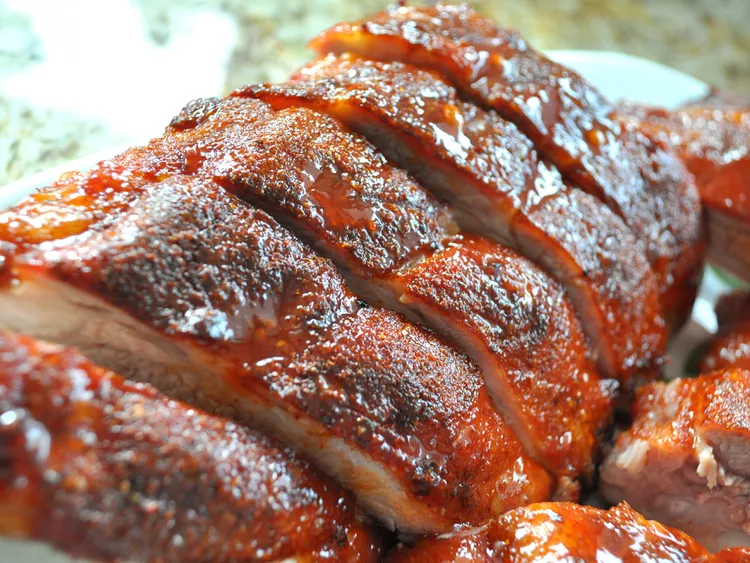

Cooking ribs on the grill is easy with this recipe for the most tender, delectable ribs you've ever had!
Wondering how to grill baby back ribs? You'll find a detailed ingredient list and step-by-step instructions in the recipe below, but let's go over the basics:
Here’s a brief overview of what you can expect when you make baby back ribs on the grill:
This grilled baby back rib recipe calls for a savory homemade spice rub made with cumin, chili powder, paprika, salt, and pepper.
It should take about an hour to perfectly cook these baby back ribs on the grill. You’ll know the ribs are done when an instant read thermometer inserted into the center reads 145 degrees F (63 degrees C).
Gather the ingredients.
Preheat a gas grill for high heat, or arrange charcoal briquettes on one side of the barbeque. Lightly oil the grate.
Combine cumin, chili powder, paprika, salt, and pepper in a small jar; close the lid and shake to mix.
Trim the membrane sheath from the back of each rack. Run a small, sharp knife between the membrane and each rib, and snip off the membrane as much as possible.
Sprinkle as much of the rub onto both sides of ribs as desired. To prevent ribs from becoming too dark and spicy, do not thoroughly rub spices into ribs. Store any unused spice mix in a jar for future use.
Place aluminum foil on the lower rack to capture drippings and prevent flare-ups. Lay ribs on the top rack of the grill (away from the coals, if you're using briquettes). Reduce gas heat to low and close the lid; cook ribs, undisturbed as possible, until meat pulls away easily from the bone, about 1 hour. An instant-read thermometer inserted into the center should read 145 degrees F (63 degrees C).
Brush ribs with barbecue sauce, and grill for an additional 5 minutes.
Serve ribs as a whole rack, or cut between each rib bone and pile individually on a platter.